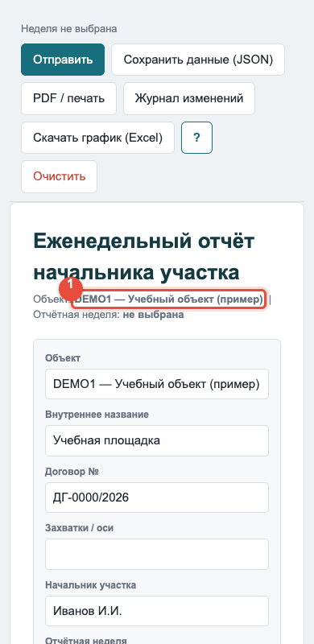
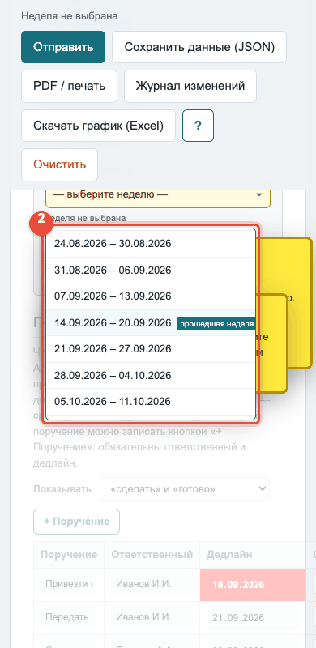
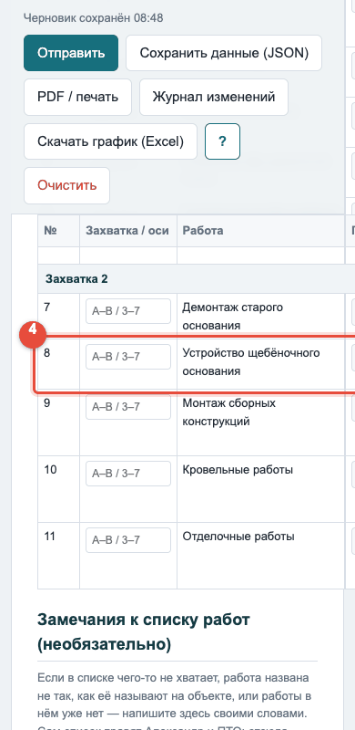
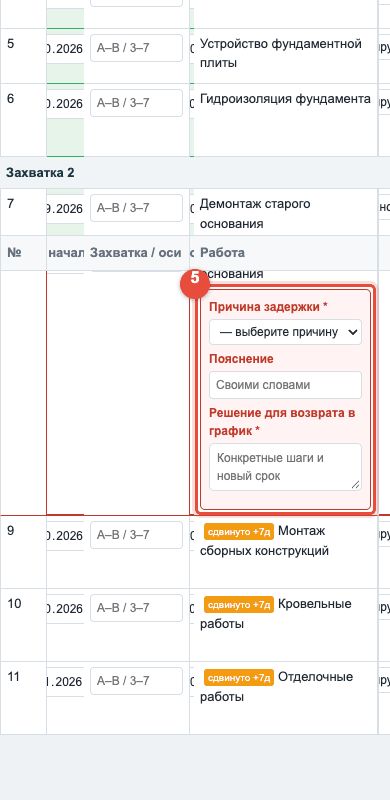
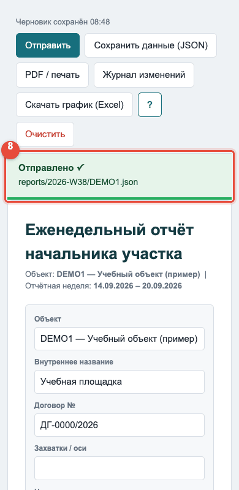

Нет доступа
Ссылка персональная — запросите у Александра Медведева.
План работ — Устройство каре этап №2
Журнал изменений
Что люди поправили в этом проекте руками: правки в редакторе, изменения из отчётов, загрузки графика, поручения. Сдвиги, которые посчитались сами следом за чужой правкой, сюда не попадают.
| Когда | Кто | Что | Изменение | Источник |
|---|
Пока ничего не менялось.
Объект: ГРАФИК устройства ж/б покрытия каре (2 этап) | код KARE2 | работ в плане:
Обновить график из Excel
Выберите файл графика, который ведёт ПТО (.xls или .xlsx), и нажмите «Отправить файл». Даты из файла лягут в столбцы «Исх. начало» и «Исх. оконч.», работы сопоставятся по номеру из первого столбца. Если ПТО завёл новые строки — они добавятся, если убрал — уйдут в архив, ничего не пропадёт. Сам файл в вашей папке не меняется.
Объект
Правьте прямо в таблице. Жёлтая строка — изменённая, голубая — добавленная, серая — убранная в архив. «В архив» не удаляет работу: она исчезает из формы отчёта, но остаётся в хранилище, и отчёты прошлых недель по ней не портятся. Номер работы за ней закреплён навсегда и другой работе не достанется. Исходное окончание и длительность связаны: правите одно — второе пересчитывается.
| № | Порядок | Группа (этап) | Работа | Захватки | Оси | Исх. начало | Исх. оконч. | Длит., дн | Привязка к № | Тек. оконч. |
|---|
Поручения
Кто что делает по объекту и к какому сроку. Начальник участка видит этот же список в своей форме отчёта и переключает «сделать» ↔ «готово»; «принято директором» ставится только здесь. Красная ячейка даты — срок прошёл, а поручение всё ещё «сделать». Поручения уходят тем же «Сохранить план», что и правки графика.
| Поручение | Ответственный | Дедлайн | Статус | Комментарий |
|---|
Поручений по этому объекту пока нет.
Что уйдёт при сохранении
Инструкция
Оглавление:
1. Откройте свою ссылку. Форма откроется с вашей фамилией в шапке и списком всех работ объекта. Ссылка персональная — не передавайте её другим: кто её открыл, тот и отправляет отчёт.


2. Выберите отчётную неделю. Нажмите жёлтое поле «— выберите неделю —» — откроется список. Выберите неделю, за которую сдаёте отчёт. Затем нажмите поле «Дата отчёта» и выберите сегодняшнее число.



3. Поручения — блок над таблицей работ.
- Выполнили поручение — переключите с «сделать» на «готово» и при нужде добавьте комментарий.
- Красная дата — срок прошёл.
- Хотите добавить поручение, которое на планёрке не записали, — нажмите «+ Поручение» и заполните кому и к какому числу.


4. Таблица работ. Заполняйте только то, что изменилось за неделю.
- «План.» — даты из графика ПТО (не менять).
- «Факт.» — реальная дата окончания: когда работа закончится на самом деле.
- Статус — планируется / в работе / сделано.
- % выполнения — заполняйте по ситуации.



5. Сдвиг даты позже графика. Когда ставите дату позже плановой — под строкой появятся два поля с красной рамкой:
- Почему — причина сдвига.
- Что делаете, чтобы вернуться в срок.
Без заполнения форма не отправится. После заполнения появляется зелёная пометка «Отклонение объяснено ✓». Следующие работы, зависящие от этой, сдвинутся автоматически.



6. «Начинается после». Кнопка в строке работы: нажмите — откроется список всех работ объекта. Выберите ту, от которой зависит эта. Если работа начинается без условий — выберите «Первое действие».

7. Потребности на следующую неделю. Раздел в конце страницы. Заполните, что понадобится: люди, техника, материалы, сумма и к какому сроку.

8. Отправить. Нажмите «Отправить» — кнопка в верхней панели. При успехе появится зелёная полоса «Отправлено ✓» и путь к файлу. Если нужно что-то поправить — кнопка изменится на «Отправить изменения».



9. Нет интернета. Нажмите «Сохранить данные (JSON)» — файл скачается на устройство. Этот файл пришлите Александру — он поместит его в систему сам. Данные не потеряются.

10. Скачать график (Excel) — кнопка в панели инструментов. Это актуальный график со свежими датами — для печати и вывески на стену площадки после планёрки во вторник.

11. Журнал изменений — кнопка в панели инструментов. Здесь видно, кто и что правил в этом проекте руками: правки в редакторе, загрузки графика, поручения. Автоматические пересчёты не показываются.


Оглавление:
Хотите посмотреть, как выглядит форма у начальника участка? Инструкция НУ ↓
1. Редактор плана. Откройте главную страницу по своей ссылке. Прокрутите вниз — там блок «Редактор плана». Нажмите на название объекта — откроется страница редактора.

2. Шапка объекта. Вверху редактора — три поля: название, номер договора, начальник участка. Изменения записываются при нажатии «Сохранить план».

3. Правка работы. Нажмите на строку работы — она раскроется. Можно поправить: название, захватки, исходные даты и длительность (три поля связаны — измените любое), «Начинается после».
Изменённая строка жёлтая, добавленная — голубая. Блок «Что изменится» перечисляет правки словами.


4. Добавить / убрать в архив.
- Добавить: кнопка «+ Работа» внутри группы.
- В архив: кнопка «× Убрать» в строке работы. Работа исчезает из формы НУ, но остаётся в хранилище — данные не пропадают.
- Вернуть из архива: нажмите «Показать архив» в конце таблицы → «↩ Вернуть» у нужной работы.


5. Обновить график из Excel. В блоке «Обновить график из Excel» нажмите «Выберите файл», выберите .xls или .xlsx, затем «Отправить файл». Через 5–10 минут появится блок «Последнее обновление графика» — что сдвинулось, что добавилось, что ушло в архив.
Если загрузили не тот файл — нажмите «Отменить последнее обновление» в том же блоке.


6. Скачать график (Excel) — кнопка в панели инструментов. Это актуальный файл со свежими датами для печати на стену площадки после планёрки во вторник.

7. Поручения. Раздел ниже таблицы работ. Отличие от формы НУ — здесь доступен статус «принято директором»: «готово» говорит исполнитель, принимает — Александр. Дедлайн и текст поручения из формы НУ правятся только здесь. Красная ячейка даты — срок прошёл.

8. Журнал изменений — кнопка в панели. Кто, когда и что именно поправил: правки в редакторе, загрузки Excel, поручения. Фильтры — по человеку, по типу изменения и по периоду.

9. Новый проект. На главной странице — блок «Новый проект». Заполните название, договор, начальника участка и прикрепите Excel-график (если есть). Нажмите «Создать проект». Через 5–10 минут объект появится в списке.

Оглавление:
Хотите посмотреть, как выглядит форма у начальника участка? Инструкция НУ ↓
1. Редактор плана. Откройте главную страницу по своей ссылке. Прокрутите вниз — там блок «Редактор плана». Нажмите на название объекта — откроется страница редактора.
2. Шапка объекта. Вверху редактора — три поля: название, номер договора, начальник участка. Изменения записываются при нажатии «Сохранить план».
3. Правка работы. Нажмите на строку работы — она раскроется. Можно поправить: название, захватки, исходные даты и длительность (три поля связаны — измените любое), «Начинается после».
Изменённая строка жёлтая, добавленная — голубая. Блок «Что изменится» перечисляет правки словами.
4. Добавить / убрать в архив.
- Добавить: кнопка «+ Работа» внутри группы.
- В архив: кнопка «× Убрать» в строке работы. Работа исчезает из формы НУ, но остаётся в хранилище — данные не пропадают.
- Вернуть из архива: нажмите «Показать архив» в конце таблицы → «↩ Вернуть» у нужной работы.
5. Обновить график из Excel. В блоке «Обновить график из Excel» нажмите «Выберите файл», выберите .xls или .xlsx, затем «Отправить файл». Через 5–10 минут появится блок «Последнее обновление графика» — что сдвинулось, что добавилось, что ушло в архив.
Если загрузили не тот файл — нажмите «Отменить последнее обновление» в том же блоке.
6. Скачать график (Excel) — кнопка в панели инструментов. Это актуальный файл со свежими датами для печати на стену площадки после планёрки во вторник.
7. Поручения. Раздел ниже таблицы работ. Отличие от формы НУ — здесь доступен статус «принято директором»: «готово» говорит исполнитель, принимает — Александр. Дедлайн и текст поручения из формы НУ правятся только здесь. Красная ячейка даты — срок прошёл.
8. Журнал изменений — кнопка в панели. Кто, когда и что именно поправил: правки в редакторе, загрузки Excel, поручения. Фильтры — по человеку, по типу изменения и по периоду.
9. Новый проект. На главной странице — блок «Новый проект». Заполните название, договор, начальника участка и прикрепите Excel-график (если есть). Нажмите «Создать проект». Через 5–10 минут объект появится в списке.
На главной странице — ниже списка объектов. Виден только директору: здесь персональные ссылки, которые нельзя публиковать открыто.

Добавить сотрудника.
- Нажмите «+ Добавить сотрудника».
- Заполните ФИО (обязательно), должность, уровень доступа — Начальник участка или Сотрудник офиса.
- Начальнику участка — отметьте объекты.
- Нажмите «Завести и показать ссылку».
Ссылка появится сразу — скопируйте и передайте лично, не в общий чат: это ключ доступа. Заработает через 5–10 минут.

Скопировать ссылку сотрудника. В строке таблицы — кнопка «Скопировать». Ссылка закрыта точками: нажмите «Показать», чтобы увидеть полностью, или «Скопировать», чтобы передать, не видя ключа.

Изменить данные сотрудника.
- В строке сотрудника нажмите «Изменить» — откроется та же форма, что при добавлении, уже заполненная.
- Поправьте ФИО, должность, уровень доступа (Начальник участка или Сотрудник офиса) и, для начальника участка, объекты.
- Нажмите «Сохранить». Изменения появятся через 5–10 минут.
Ссылка у сотрудника остаётся прежней — заново передавать её не нужно. Новое ФИО появится в его форме и в журналах с этого момента; старые записи остаются как были. Если убрать у начальника участка объект, этот объект у него перестанет открываться. Сделали сотрудника офиса начальником участка — он больше не сможет править проекты, и наоборот.
У директоров уровень доступа на этой странице не меняется — поле неактивно; если нужно, напишите Артёму. Каждая правка записывается в «Кто кому выдавал доступ»: что было и что стало.

Отозвать доступ. Кнопка «Отозвать доступ» в строке, затем подтверждение. Через 5–10 минут ссылка перестанет работать. Запись остаётся серой строкой в истории.
Своя инструкция у каждого. Кнопка «?» есть на каждой странице, и открывает она инструкцию того уровня, с которым человек вошёл. У вас видны все три — переключайтесь вкладками наверху.

Вторник 13:00 — планёрка по повестке из поступивших отчётов.
После планёрки — нажмите «Скачать график (Excel)» и распечатайте обновлённый график для каждого объекта; повесьте на стену площадки.